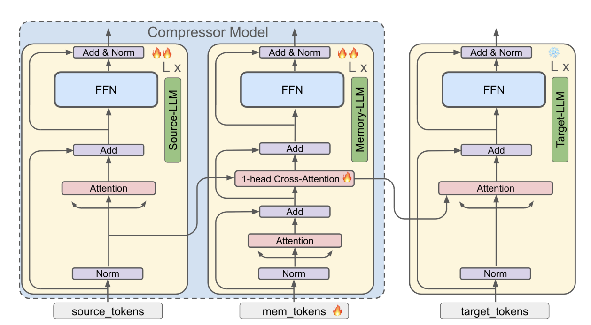
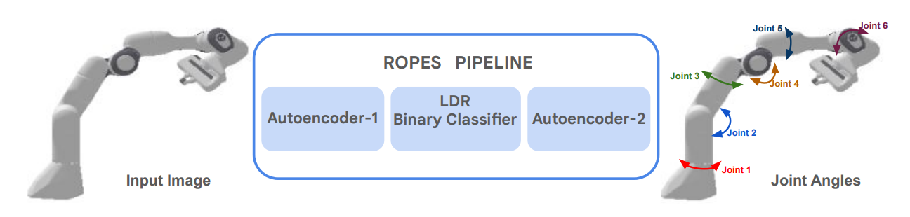
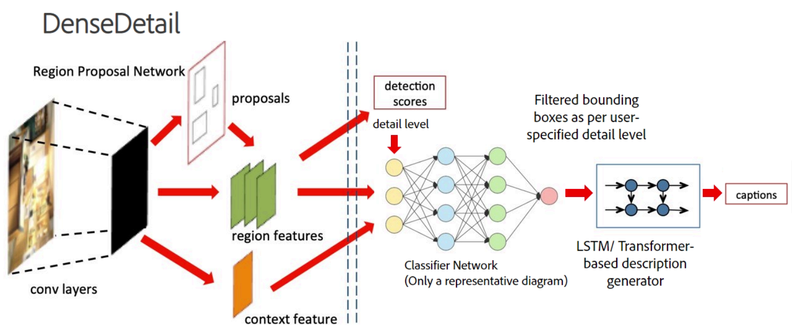

|
Pranamya Kulkarni I am a Pre-Doctoral Researcher at Google DeepMind India, working in the Machine Learning and Optimization (MLO) team. I work with Dr. Prateek Jain, Dr. Pradeep Shenoy, Dr. Karthikeyan Shanmugam, and Dr. Arun Suggala. My current research focuses on improving the training and inference efficiency of Large Language Models, as well as enabling label-free robotic pose estimation using causal representation learning. Previously, I completed an Interdisciplinary Dual Degree at IIT Bombay, earning a B.Tech (Honors) in Electrical Engineering and an M.Tech in Artificial Intelligence and Data Science. I was advised by Prof. Soumen Chakrabarti and Prof. Abir De, where I worked on Graph Neural Networks. I also completed a research internship at Adobe Research India. In my free time, I enjoy playing and watching cricket, playing chess, and gaming on PlayStation. |

|
Projects |
|  |
Compressing Many-Shots in In-Context Learning
Devvrit Khatri, Pranamya Kulkarni, Nilesh Gupta, Yerram Varun, Liqian Peng, Jay Yagnik, Praneeth Netrapalli, Cho-Jui Hsieh, Alec Go, Inderjit S Dhillon, Aditya Kusupati, Pratek Jain Preprint available on arXiv arXiv We introduce MemCom, a layer-wise compression method designed to improve the memory and computational efficiency of many-shot In-Context Learning (ICL). By compressing prompts into a compact key-value (KV) cache, MemCom significantly reduces inference costs while maintaining high performance across various classification tasks. |
|  |
ROPES: Robotic Pose Estimation via Score-Based Causal Representation Learning
Pranamya Kulkarni*, Puranjay Datta*, Emre Acartürk, Burak Varıcı, Karthikeyan Shanmugam, Ali Tajer Accepted to the Embodied World Models for Decision Making Workshop at NeurIPS 2025 arXiv We propose ROPES, an unsupervised framework for robotic pose estimation that recovers joint angles from raw images using score-based Causal Representation Learning. By leveraging interventional data distributions, ROPES disentangles controllable latent variables without requiring any explicit pose labels. |

|
M3CoL: Harnessing Shared Relations via Multimodal Mixup Contrastive Learning for Multimodal Classification
Raja Kumar*, Raghav Singhal*, Pranamya Kulkarni, Deval Mehta, Kshitij Jadhav TMLR project page / code / arXiv We introduce a multimodal mixup-based contrastive learning framework that effectively captures shared relations across modalities, enabling robust multimodal representation learning. |

|
IndiBias: A Benchmark Dataset to Measure Social Biases in Language Models for Indian Context
Nihar Ranjan Sahoo, Pranamya Kulkarni, Narjis Asad, Arif Ahmad, Tanu Goyal, Aparna Garimella, Pushpak Bhattacharyya NAACL 2024 Paper We introduce IndiBias, a comprehensive benchmarking dataset designed to evaluate social biases in Large Language Models within the unique socio-cultural nuances of the Indian context. The dataset is built by adapting existing resources and leveraging LLMs to cover diverse biases like gender, religion, caste, and more. |
|  |
Image Description Generation with Varying Levels of Detail
Pranamya Kulkarni*, Akshay Iyer*, Kanad Pardeshi*, Nikunj Goyal*, Apoorv Saxena, Praneetha Vaddamanu, Abhilasha Sancheti, Aparna Garimella, Vishwa Vinay U.S. Patent Application Filed Patent We present a system for generating image descriptions with controllable levels of detail, catering to diverse user needs from low-level summaries to high-granularity captions. Our approach introduces a novel scoring mechanism and utilizes architectures like DetailBERT and DenseDetail to allow users to explicitly specify the amount of information required in the output. |
|
Website template by Jon Barron. |